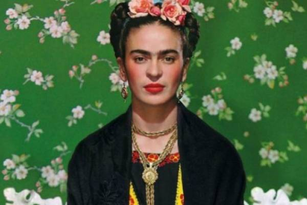
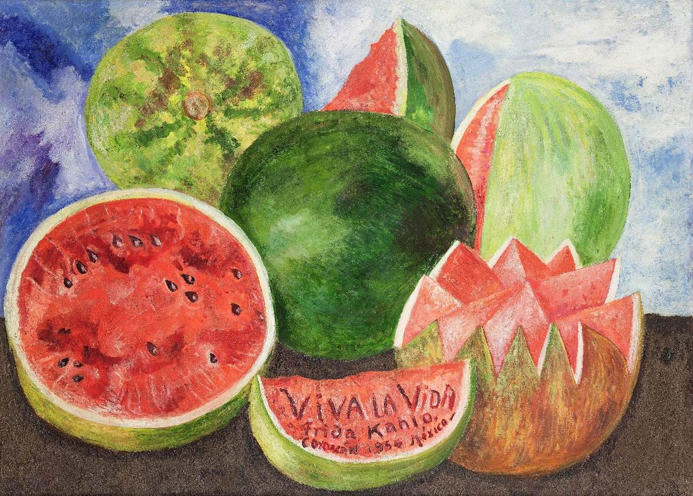
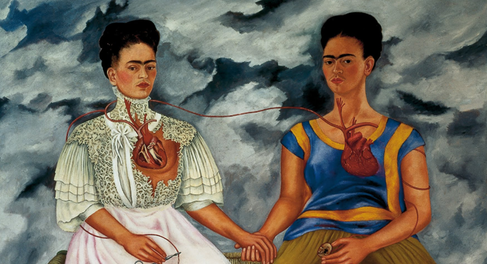
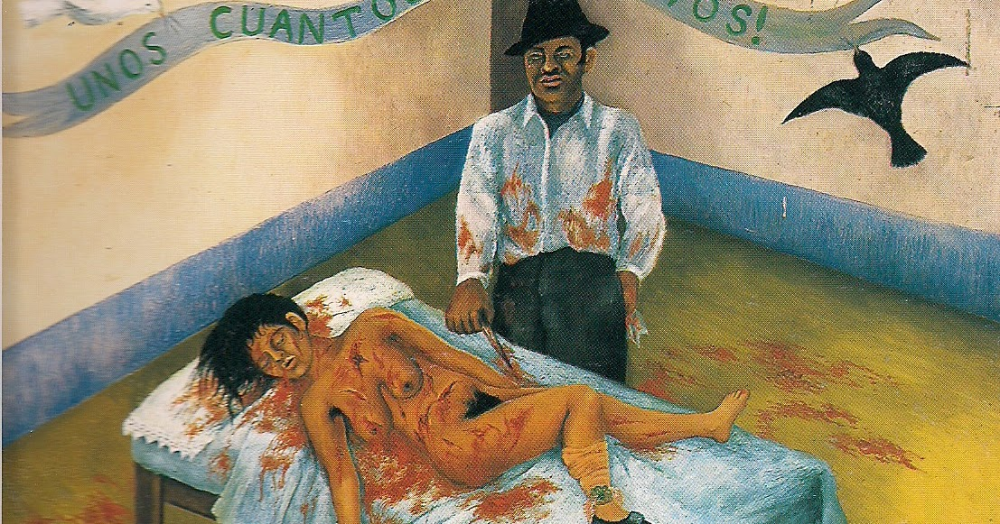

Volver a inicio
𝔽𝕣𝕚𝕕𝕒 𝕂𝕒𝕙𝕝𝕠

Biografia
(Magdalena Carmen Frida Kahlo; Coyoacán, México, 1907 - id., 1954) Pintora mexicana. Aunque se movió en el ambiente de los grandes muralistas mexicanos de su tiempo y compartió sus ideales, Frida Kahlo creó una pintura absolutamente personal, ingenua y profundamente metafórica al mismo tiempo, derivada de su exaltada sensibilidad y de varios acontecimientos que marcaron su vida.
A los dieciocho años Frida Kahlo sufrió un gravísimo accidente que la obligó a una larga convalecencia, durante la cual aprendió a pintar, y que influyó con toda probabilidad en la formación del complejo mundo psicológico que se refleja en sus obras. En 1929 contrajo matrimonio con el muralista Diego Rivera; tres años después sufrió un aborto que afectó en lo más hondo su delicada sensibilidad y le inspiró dos de sus obras más valoradas: Henry Ford Hospital y Frida y el aborto, cuya compleja simbología se conoce por las explicaciones de la propia pintora.
También son muy apreciados sus autorretratos, asimismo de compleja interpretación: Autorretrato con monos o Las dos Fridas. Cuando André Breton conoció la obra de Frida Kahlo, afirmó que la mexicana era una surrealista espontánea y la invitó a exponer en Nueva York y París, ciudad esta última en la que no tuvo una gran acogida. Frida nunca se sintió cerca del surrealismo, y al final de sus días rechazó abiertamente que su creación artística fuera encuadrada en esa tendencia.
En su búsqueda de las raíces estéticas de México, rasgo que compartió con Diego Rivera y los muralistas (David Alfaro Siqueiros, José Clemente Orozco), Frida Kahlo realizó espléndidos retratos de niños y obras inspiradas en la iconografía mexicana anterior a la conquista, pero son las telas que se centran en ella misma y en su azarosa vida las que la han convertido en una figura destacada de la pintura mexicana del siglo XX.
Obras de Frida Kahlo

Naturaleza viva |

Naturaleza muerta |

Las dos Fridas |

Unos cuantos piquetitos |

El Ciervo Herido |
|